── Attaching core tidyverse packages ──────────────────────── tidyverse 2.0.0 ──
✔ dplyr 1.1.3 ✔ readr 2.1.4
✔ forcats 1.0.0 ✔ stringr 1.5.0
✔ lubridate 1.9.2 ✔ tibble 3.2.1
✔ purrr 1.0.2 ✔ tidyr 1.3.0
── Conflicts ────────────────────────────────────────── tidyverse_conflicts() ──
✖ dplyr::filter() masks stats::filter()
✖ dplyr::lag() masks stats::lag()
✖ dplyr::select() masks MASS::select()
ℹ Use the conflicted package (<http://conflicted.r-lib.org/>) to force all conflicts to become errorsPractica 3
Presentación
El dataset Boston Housing Dataset es un conjunto de datos sobre la ciudad de Boston en relación a las viviendas. Fue realizado por el censo de 1970 y consta de 506 observaciones con 14 variables:
CRIM (Tasa de criminalidad): Representa la tasa de criminalidad per cápita por vecindario.
ZN (Proporción de tierras residenciales para lotes de más de 25,000 pies cuadrados): Indica la proporción de terreno residencial dividido en lotes de más de 25,000 pies cuadrados.
INDUS (Proporción de acres de negocios no minoristas por ciudad): Mide la proporción de tierra utilizada para negocios no minoristas.
CHAS (Variable ficticia de Charles River): Es una variable binaria que indica si una vivienda limita con el río Charles (1 si es cierto, 0 si no).
NOX (Concentración de óxidos nítricos): Representa la concentración de óxidos nítricos (en partes por 10 millones). En general se suele usar esta medida para estudiar la polución del aire.
RM (Número medio de habitaciones por vivienda): Indica el promedio de habitaciones por vivienda en el vecindario.
AGE (Proporción de unidades ocupadas por sus propietarios construidas antes de 1940): Mide la proporción de unidades ocupadas por sus propietarios construidas antes de 1940.
DIS (Distancias ponderadas a cinco centros de empleo de Boston): Representa distancias ponderadas a centros de empleo en Boston.
RAD (Índice de accesibilidad a carreteras radiales): Mide la accesibilidad a carreteras radiales principales.
TAX (Tasa de impuesto a la propiedad de valor total por $10,000): Indica la tasa de impuesto a la propiedad.
PTRATIO (Proporción alumno-maestro): Mide la proporción de alumnos por maestro en las escuelas del vecindario.
B (1000(Bk - 0.63)^2), donde Bk es la proporción de personas de raza negra por ciudad: Este término está relacionado con la proporción de personas de raza negra en la ciudad y se ha transformado para resaltar las áreas con alta proporción de personas de raza negra.
LSTAT (Porcentaje de la población de bajos ingresos): Representa el porcentaje de la población con bajos ingresos.
MEDV (Valor medio de las viviendas ocupadas por sus propietarios en $1000): Es la variable objetivo que queremos predecir, el valor medio de las viviendas.
Todas las variables son cuantitativas excepto CHAS (Variable ficticia de Charles River) que es cualitativa nominal y RAD (Índice de accesibilidad a carreteras radiales) que es ordinal.
Nuestro objetivo será determinar las relaciones entre las características de un área determinada y el precio medio de la vivienda en dicha área. También nos preguntaremos que diferentes mediciones pueden estar relacionadas con la contaminación.
Nuestro objetivo será determinar las relaciones entre las características de un área determinada y el precio medio de la vivienda en dicha área. Además también exploraremos los efectos de la polución.
Database
Podemos encontrar el dataset en el paquete MASS
Veamos un resumen de los datos
crim zn indus chas
Min. : 0.00632 Min. : 0.00 Min. : 0.46 Min. :0.00000
1st Qu.: 0.08205 1st Qu.: 0.00 1st Qu.: 5.19 1st Qu.:0.00000
Median : 0.25651 Median : 0.00 Median : 9.69 Median :0.00000
Mean : 3.61352 Mean : 11.36 Mean :11.14 Mean :0.06917
3rd Qu.: 3.67708 3rd Qu.: 12.50 3rd Qu.:18.10 3rd Qu.:0.00000
Max. :88.97620 Max. :100.00 Max. :27.74 Max. :1.00000
nox rm age dis
Min. :0.3850 Min. :3.561 Min. : 2.90 Min. : 1.130
1st Qu.:0.4490 1st Qu.:5.886 1st Qu.: 45.02 1st Qu.: 2.100
Median :0.5380 Median :6.208 Median : 77.50 Median : 3.207
Mean :0.5547 Mean :6.285 Mean : 68.57 Mean : 3.795
3rd Qu.:0.6240 3rd Qu.:6.623 3rd Qu.: 94.08 3rd Qu.: 5.188
Max. :0.8710 Max. :8.780 Max. :100.00 Max. :12.127
rad tax ptratio black
Min. : 1.000 Min. :187.0 Min. :12.60 Min. : 0.32
1st Qu.: 4.000 1st Qu.:279.0 1st Qu.:17.40 1st Qu.:375.38
Median : 5.000 Median :330.0 Median :19.05 Median :391.44
Mean : 9.549 Mean :408.2 Mean :18.46 Mean :356.67
3rd Qu.:24.000 3rd Qu.:666.0 3rd Qu.:20.20 3rd Qu.:396.23
Max. :24.000 Max. :711.0 Max. :22.00 Max. :396.90
lstat medv
Min. : 1.73 Min. : 5.00
1st Qu.: 6.95 1st Qu.:17.02
Median :11.36 Median :21.20
Mean :12.65 Mean :22.53
3rd Qu.:16.95 3rd Qu.:25.00
Max. :37.97 Max. :50.00 Veamos la estructura de los datos:
crim zn indus chas nox rm age dis rad tax ptratio black
1 0.00632 18.0 2.31 0 0.538 6.575 65.2 4.0900 1 296 15.3 396.90
2 0.02731 0.0 7.07 0 0.469 6.421 78.9 4.9671 2 242 17.8 396.90
3 0.02729 0.0 7.07 0 0.469 7.185 61.1 4.9671 2 242 17.8 392.83
4 0.03237 0.0 2.18 0 0.458 6.998 45.8 6.0622 3 222 18.7 394.63
5 0.06905 0.0 2.18 0 0.458 7.147 54.2 6.0622 3 222 18.7 396.90
6 0.02985 0.0 2.18 0 0.458 6.430 58.7 6.0622 3 222 18.7 394.12
7 0.08829 12.5 7.87 0 0.524 6.012 66.6 5.5605 5 311 15.2 395.60
8 0.14455 12.5 7.87 0 0.524 6.172 96.1 5.9505 5 311 15.2 396.90
9 0.21124 12.5 7.87 0 0.524 5.631 100.0 6.0821 5 311 15.2 386.63
10 0.17004 12.5 7.87 0 0.524 6.004 85.9 6.5921 5 311 15.2 386.71
lstat medv
1 4.98 24.0
2 9.14 21.6
3 4.03 34.7
4 2.94 33.4
5 5.33 36.2
6 5.21 28.7
7 12.43 22.9
8 19.15 27.1
9 29.93 16.5
10 17.10 18.9El dataset que tenemos ya lo encontramos de forma tidy. Sin embargo, observamos en los siguientes gráficos que tiene muchos outliers que habrá que tener en cuenta a la hora de estudiar los datos
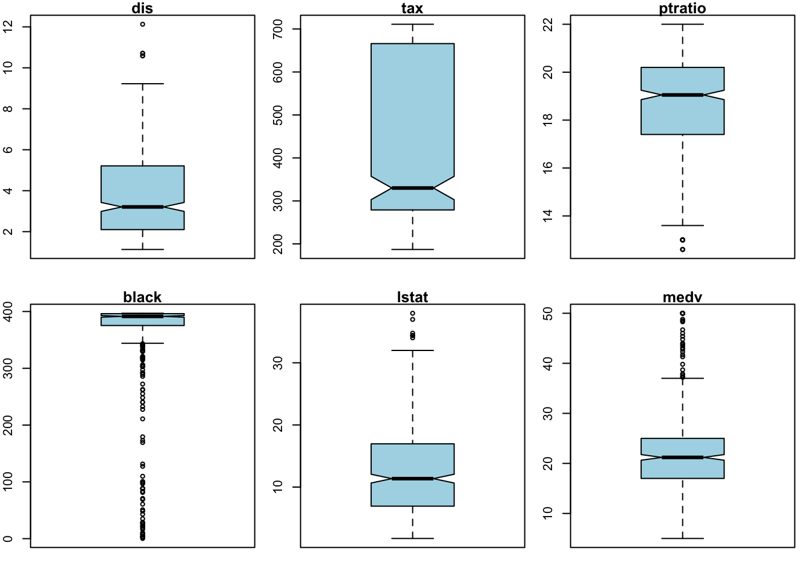
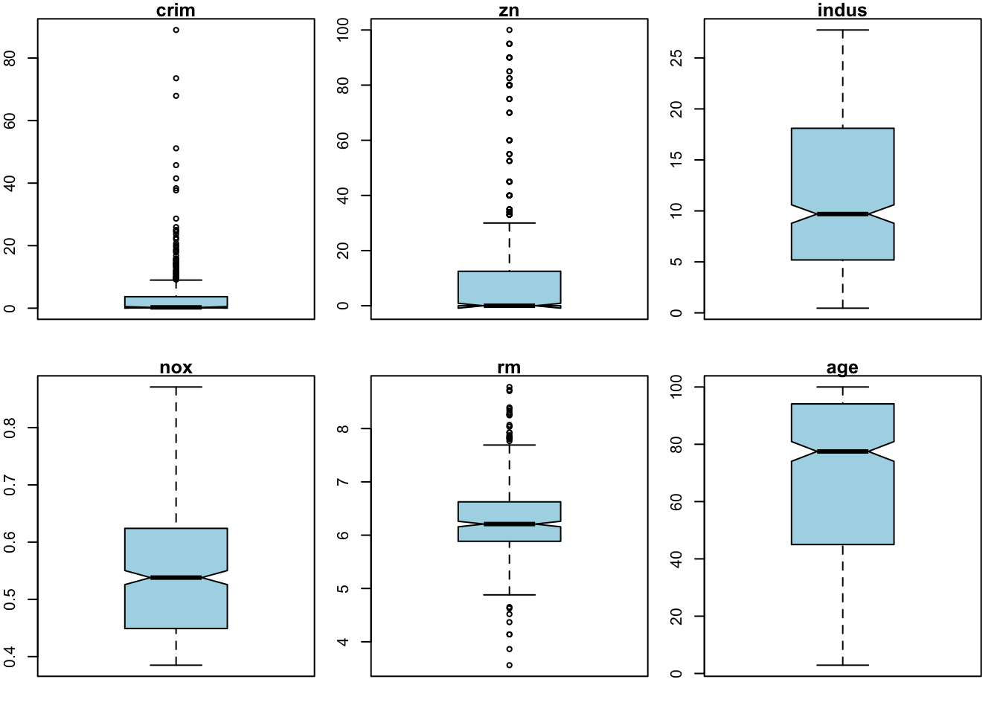
Cambiamos la variable chas por ‘sí’ si es un 1 y ‘no’ si es un ‘0’ para trabajar con ella de manera más cómoda.
Este gráfico nos muestra que la variable rad toma valores entre 1 y 24, aunque la mayoría están entre 0 y 8, a excepción de un grupo que tiene 24
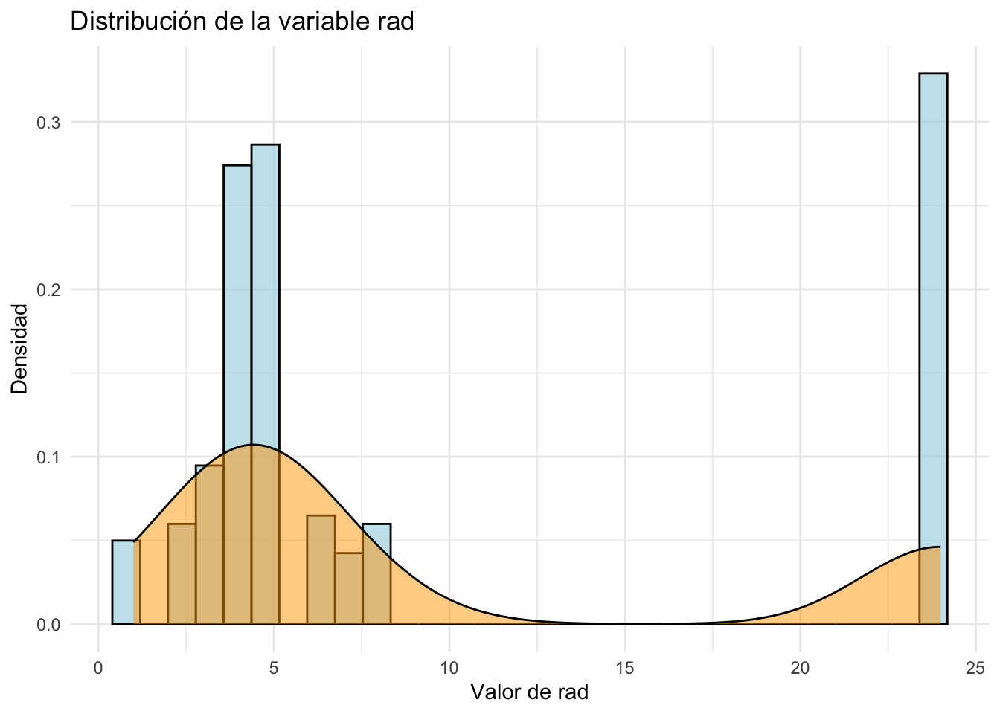
Lo podemos ver más claro en esta tabla:
df$rad n
1 1 20
2 2 24
3 3 38
4 4 110
5 5 115
6 6 26
7 7 17
8 8 24
9 24 132Para resaltar que se trata de una variable ordinal distinguiremos entre ‘bajo’ si tiene menos de 4; ‘medio’ si tiene entre 4 y 5; ‘medio alto’ si tiene más de 5 pero menos de 24 y ‘alto’ si tiene 24.
Análisis
Precio medio de la vivienda
Veamos la matriz de correlaciones de las variables cuantitativas
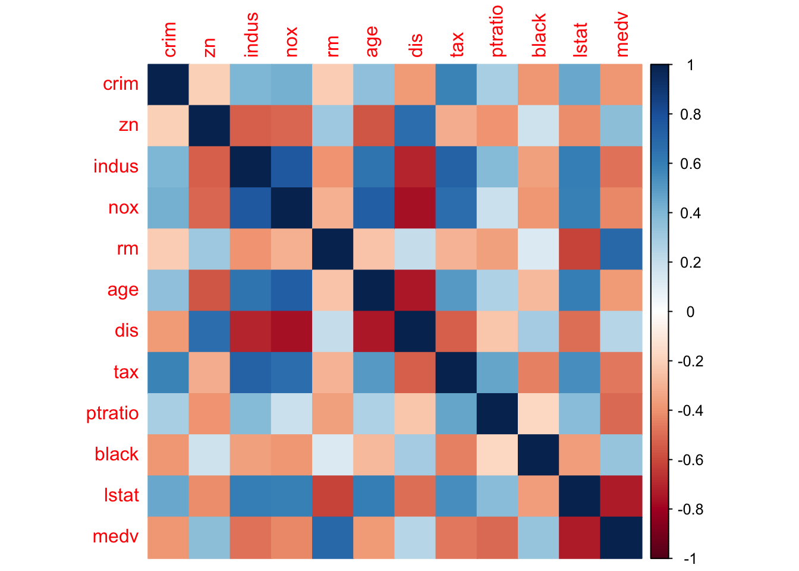
Observamos rm (el número de habitaciones) tiene el coeficiente de correlación más alto con medv, es decir, el precio medio de la vivienda tiende a aumentar a medida que lo hace el número de habitaciones. Por otro lado, parece estar fuertemente correlacionado negativamente con medv ya que a medida que aumenta el porcentaje de. la población con bajos ingresos disminuye el precio medio de la vivienda.
También cabe destacar que algunas variables como el índice de criminalidad y la distancia ponderada centros de empleo no tienen tanta correlación como cabría esperar.
Es interesante observar que otras variables están fuertemente correlacionadas. Positivamente tenemos indus con nox (porcentaje de zona industrial con polución) y negativamente, dis con indus (distancia ponderada apuestos de empleo con porcentaje de zona industrial), dis con nox y dis con age (porcentaje de viviendas construidas antes de 1940 habitadas).
Veamos ahora si el hecho de bordear con el río o no tiene alguna influencia sobre el precio:
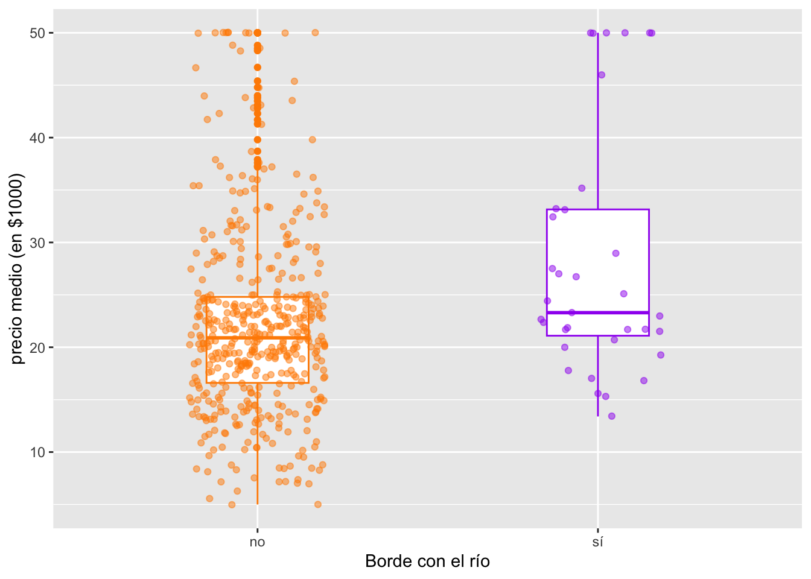
[1] 28.44Vemos que en efecto el precio medio de las casas que dan al río es más alto. En particular las casas que bordean con el río tienen un precio medio de $28.44K que es aproximadamente un 26% más alto que la media.
Vamos a estudiar si la accesibilidad a carreteras radiales tiene alguna influencia sobre el precio:
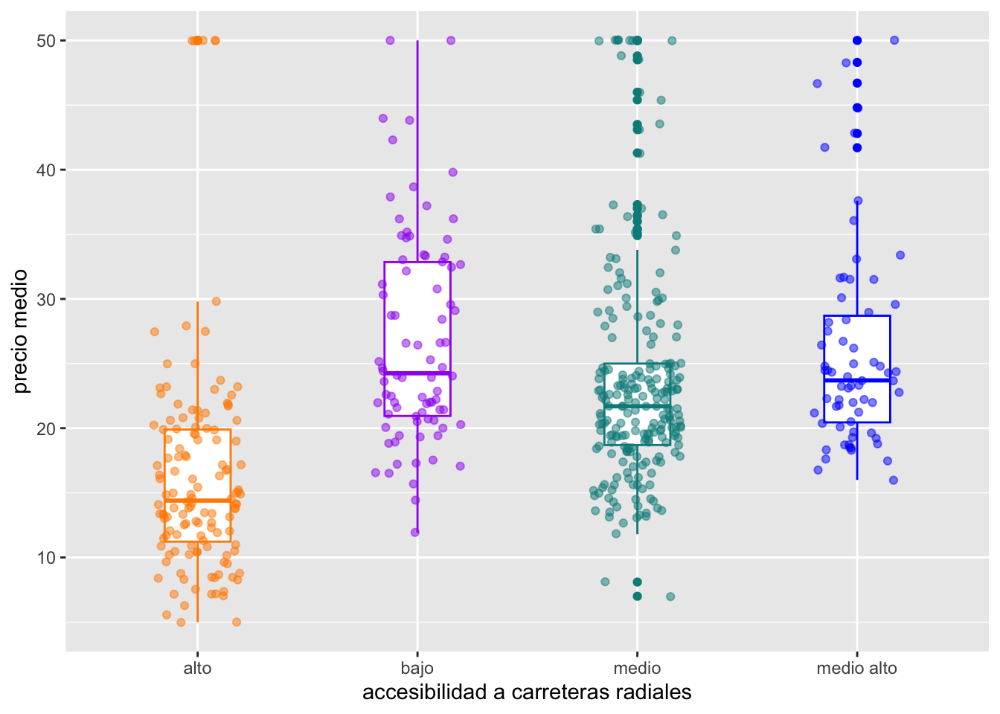
[1] 26.73902[1] 23.59511[1] 25.89254[1] 16.40379Vemos que en general el precio medio de la vivienda es menor si el acceso a carreteras radiales es mayor, en particular la media de las casas con alto acceso es $16.4K, un 27% más bajo que la media. Por otro lado la media de las casas con bajo acceso es de $26.74K, un 19% por encima de la media. Es probable que esto se deba a que las casas más lujosas se encuentran en áreas más exclusivas con menos accesos y las casas más baratas están en áreas más concurridas con más accesos.
Veamos algunos gráficos de las variables más correlacionadas con medv:
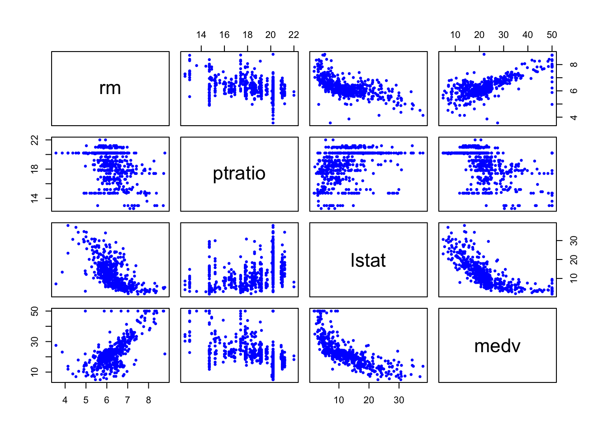
rm ptratio lstat medv
rm 1.0000000 -0.3555015 -0.6138083 0.6953599
ptratio -0.3555015 1.0000000 0.3740443 -0.5077867
lstat -0.6138083 0.3740443 1.0000000 -0.7376627
medv 0.6953599 -0.5077867 -0.7376627 1.0000000Veamos el gráfico de medv con rm más de cerca
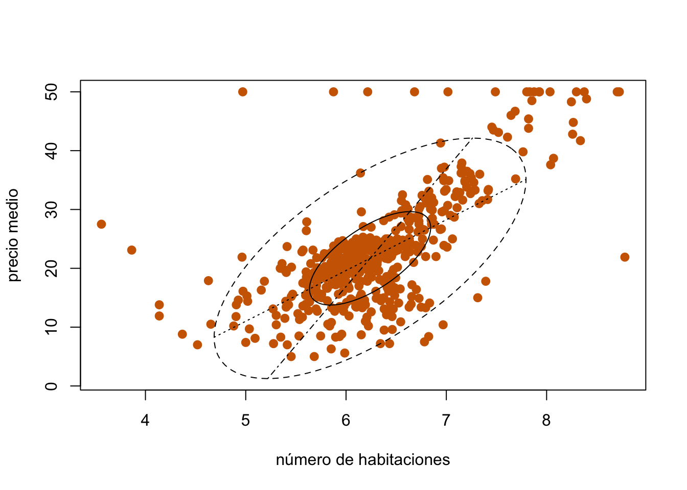
Veamos el gráfico de medv con lstat más de cerca
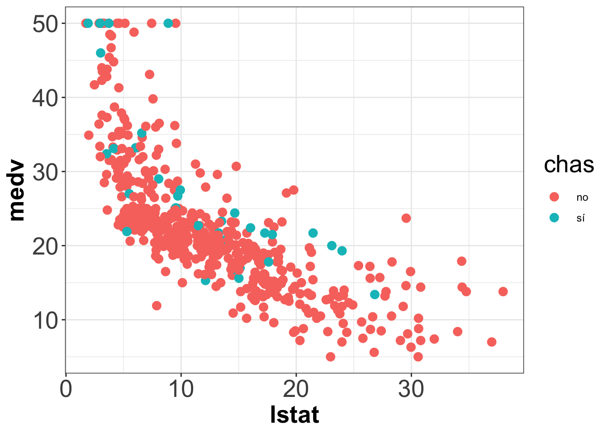
[1] 11.24171En contraste con el gráfico anterior que mostraba un crecimiento aparentemente lineal del precio con respecto el número de habitaciones, parece que el decrecimiento del precio con respecto el aumento del porcentaje de pobreza es más bien logarítmico.
También es interesante observar que a pesar de que tanto la variable chas como la variable lstat influyen de manera notable en el precio medio de la vivienda, la media del porcentaje de pobreza en las zonas que bordean con el río es 11.24 que varía poco la media global, 12.65.
Contaminación
Ahora vamos a ver la relación de las variables con la contaminación. En el gráfico multivariante de correlaciones hemos podido observar que nuestra variable NOX, que mide el nivel de óxidos nítricos y así nos da una idea del nivel de contaminación, está relacionada con las variables AGE, INDUS y DIS.
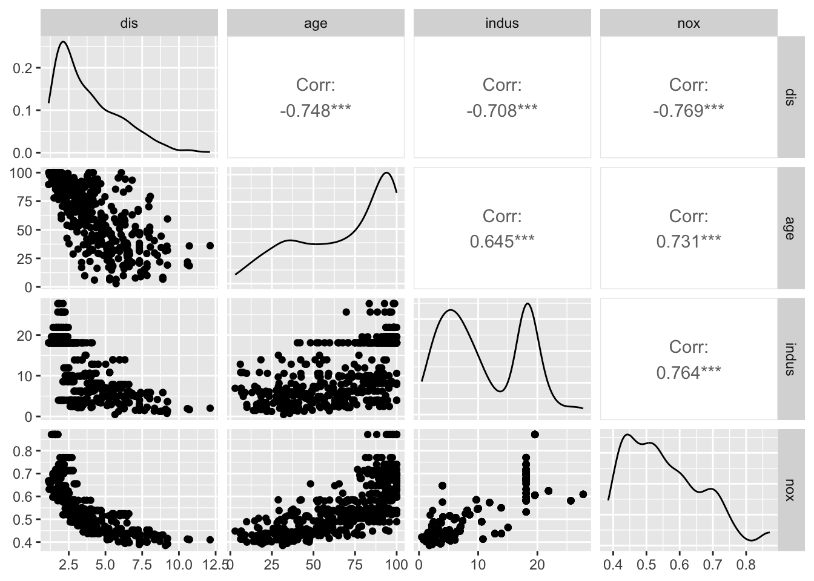
En este gráfico multivariante observamos que una medida de la contaminación está positivamente correlada con la cantidad de viviendas antiguas habitadas y la proporción de tierra de negocios mayoristas. Y está negativamente correlada con la distancia a los centros de empleo. Ahora también nos podemos preguntar si las viviendas más cercanas al río tienen menor contaminación. En el sigüiente gráfico lo estudiaremos:j
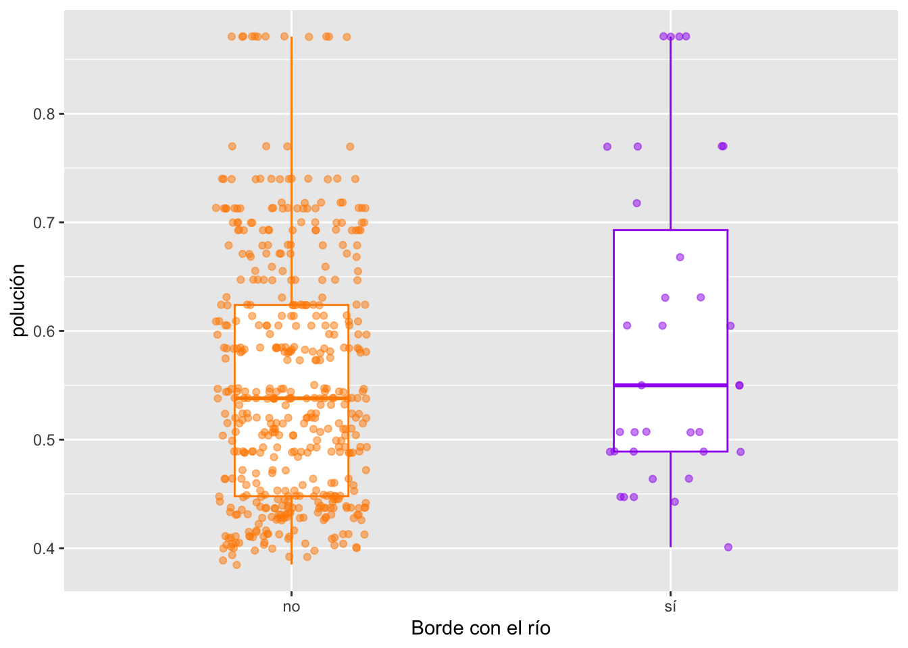
También observaremos el cambio en relación a nuestra variable ordinal que mide la accesibilidad a carreteras radiales
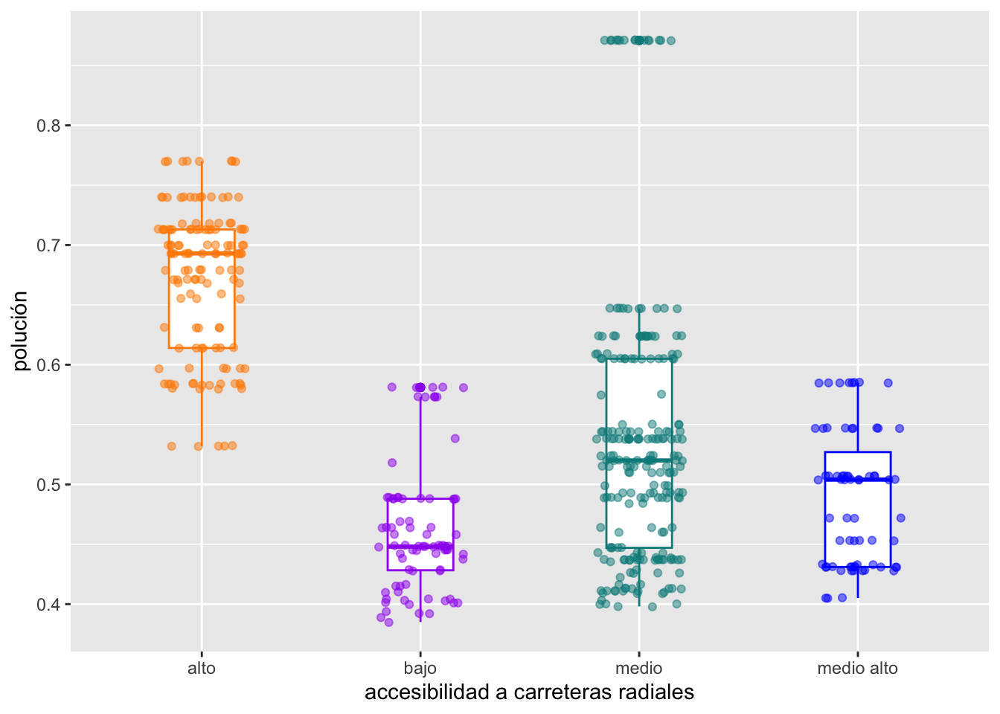
Conclusión
En conclusión,las variables cuantitativas que más afectan al precio medio de la vivivienda son el número de habitaciones y el porcentaje de porcentaje de la población con bajos ingresos. Tiende a aumentar de manera lineal a medida que aumenta el el número de habitaciones y a disminuir de manera logarítmica a medida que aumenta la proporción de bajos ingresos.
Por otro lado, el hecho de bordear con el río tiende a ir asociado a un aumento del precio medio en un 26% y tener un índice alto de accesibilidad tiende a ir asociado a una disminución del precio medio en un 27%.
Finalmente, la polución está relacionada con la con la cantidad de viviendas antiguas habitadas, la proporción de tierra de negocios mayoristas y la distancia a los centros de empleo.